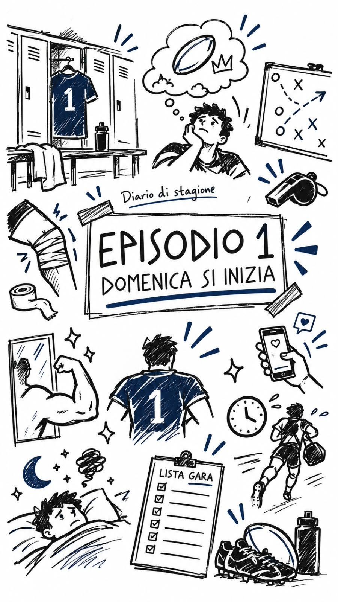

Domenica si inizia
“Il multiverso è un concetto di cui sappiamo spaventosamente poco”

Venerdì sera, spogliatoi, ultimo allenamento che precede la prima giornata di campionato.
- Domenica si inizia…
- Come?
- Eh domenica si inizia, c’è la prima di campionato.
- Cazz!
Uno dei tanti è così, immerso nei suoi pensieri, nei suoi problemi, non lo fa con cattiveria, il rugby gli piace. È solo che ha la testa tra le nuvole.
Quello affianco non si capacita, gioca a rugby da 20 anni ed ogni anno conta i giorni, le ore e i minuti che lo separano da quel nuovo calcio d’inizio.
C’è quello pieno di acciacchi, infiltrazioni in corpo come se piovesse, pensieri di ritiro. Eppure è sempre lì.
C’è quello che si guarda allo specchio “belli sti bicipiti, chissà come mi sta la maglia da gioco”.
C’è quello che lo scrive sui social, che fa pubblicità e quello che si tiene tutto per sè, perché a lui piace così.
Il solito farà ritardo all’appuntamento, già lo sa. Gli altri già lo sanno. Vabbè: multa.
Qualcun altro la notte prima non riuscirà a prendere sonno. Uno di loro invece tirerà fino a tardi. Lo sa che non è l’ideale, che bisogna essere atleti ma: “alla tipa chi glielo dice?”
Il dirigente è alle prese con la lista gara. Il fisioterapista si prepara alle lamentele del lunedì.
L’allenatore ha altri pensieri: “Chi schiero? Come lo schiero? …Perché lo schiero?”
L’attesa - dicono - aumenta il desiderio.
Domenica si inizia.